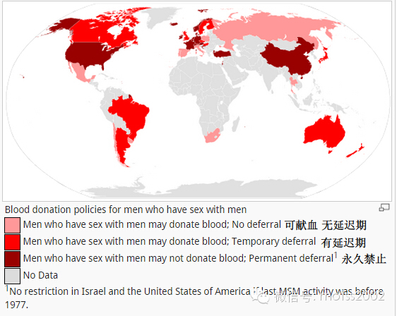

从今天开始跟大家见面的【同声译站】是一档致力于传递国外LGBT相关资讯的栏目，请大家多多关注！
各位同学有没有鼓起勇气走上献血车？
在填表时有没有发现是否同性恋者的问题？
在这个问题上你撒谎了吗？
这个歧视性的政策只在中国有吗？ 我们能做些什么？
欢迎大家点击底部【阅读原文】进入论坛参与讨论。
1983年，那时公众对艾滋病的恐惧远超研究人员对它的认知，同性和双性恋者的平等权利还远未得到社会的承认。于是美国食品药品监督管理局（FDA）颁布禁令——禁止自1977年起任何与其他同性有过性关系的男性捐献血液。
近日，美国联邦政府的一个咨询委员会提议废止该禁令，并设立一个为期一年的延迟期，只要在12个月内没有与同性发生性关系即可以献血。FDA应当先接受这个提议并将其作为进一步放松限制的基础。
目前还不清楚这项改变会将增加多少献血者，但这并不是唯一的目标——更重要的是制定一项在保证受血者安全的前提下反映科学精神，避免无端的歧视。这项改变看起来实现了这个目的:澳大利亚的经验表明，自其以一年期的延迟期取代禁令之后的十余年间，澳大利亚血液供应中的HIV检出量并没有上升。
英国和新西兰也同样实行了一年期的延迟期，但大部分的欧洲国家依然保留着这项终身禁令。去年，加拿大终结了男同性恋者献血禁令，虽然目前没有任何证据表明延迟期越长血液越有保障，该国仍设置了长达五年的延迟期。这项提议旨在通过一段等待期限制高危献血者以此减小使用在化验中呈现假阴性的血液的概率。与此同时也代表了受血者实际上源于恐惧而非科学的担忧。
附:Countries withtheir stand on MSM blood donors(Wikipedia)
